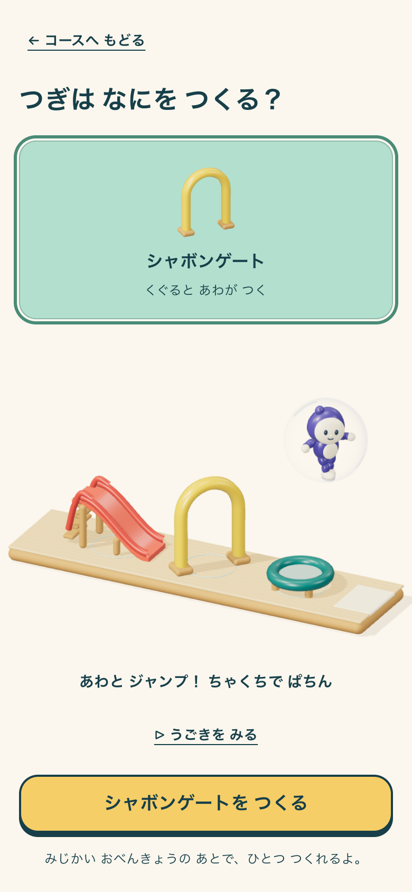
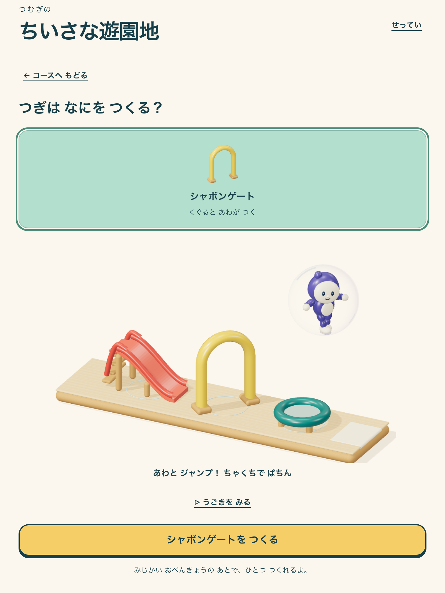

RUNTIME EVIDENCE · 2026-09-06 · LOCAL CANDIDATE
ちいさな遊園地
組み替えて遊べる、3Dの1コース。
既存アプリの制作・配置・試遊から取得した画像と録画。初期所有は2部品。比較のゲートはテスト専用プロフィールにだけ用意し、A/Bの静止画は同じ所有部品を実際の配置UIで交換したものです。
実アプリを開く · 旧表示を開く · 検証結果 · 実行記録
対象: http://127.0.0.1:5188/#/park · revision: 4102126-park-three-review · candidate: park-three-resin-v1 · delivery: build-play-v1
VITE_BUILD_PLAY_ENABLED=true / VITE_PARK_RENDERER=three · Chromium / Apple M4 Metal · 390×844、768×1024のエミュレーション
参照未承認。美術の最終承認、独立した子どもの無説明観察、iOS/Android実機、公開反映は未実施です。
実行中アプリからの短い録画
A：すべり台 → トランポリン → ゲートB：すべり台 → ゲート → トランポリン
制作見本の実再生

